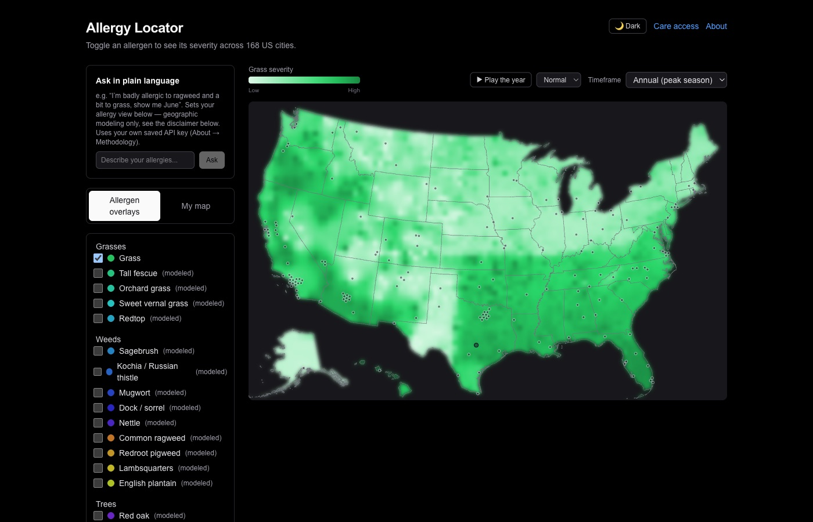

Pick the exact allergens on your own panel. See a real, validated severity map of 168 US cities built around you — not a generic "pollen is high today" number that's mostly measuring plants you're not even allergic to.

The real, ground-truth-fit grass model -- continuous gradient across 168 cities, playable month by month. Live at the link above.
USDA range maps tell you WHERE a species can grow — for grass, that's basically everywhere. Timothy and Kentucky bluegrass live in all 51 states; Bermuda grass covers 42. Coloring a map by "does this allergen exist here" turns the whole country red and tells you nothing.
What actually separates a place that wrecks you from one you barely notice is season length × climate load × how much of that plant is actually planted, irrigated, and farmed near where people live — not whether it exists on a botanical range map. Flagstaff and Phoenix both technically "have" grass. One is fine. One is rough. A presence map can't tell you which.
And a public pollen index mixes in every allergen at once — if you're not allergic to ragweed or juniper, a city reading "HIGH" because of them means nothing for you, and a city reading "LOW" while your actual triggers spike will blindside you.
Fit against real, lived ground-truth reactions across an actual multi-state road trip — not just theory. Mean absolute error 2.3 on a 0–100 scale. Confirmed externally: AAFA's own 2026 city rankings independently name the same irrigated-turf/grass-seed-farm valleys (Boise, Provo, Ogden, Spokane) as the worst grass cities — for the same reason this model predicts them.
Trees, weeds, and mold species extend the same season × climate approach, clearly labeled "modeled" rather than "validated" everywhere in the app — this project never blurs the two. No allergen's confidence level is hidden from you.
Two densification layers make the map an actual continuous surface instead of 168 lonely dots: a real ~3,143-county gradient built from Census, USGS irrigation, and USDA agricultural data, and a real per-city, day-by-day phenology curve driven by NOAA's 1991–2020 daily climate normals — so a Trip Planner can tell you the best and worst days for a specific date range, not just "spring is bad."
CSV, photo, or PDF of an actual lab report. Photo/PDF extraction runs through two independent AI passes — a generate pass, then a separate verify pass that re-checks the first against the source — because a wrong number in health data is worse than a missing one.
Save named profiles (you, a partner, a kid) and view them together three ways: worst-case, a compounding-risk blend, or side-by-side — your choice, not one baked-in default.
Beyond the compact shareable link, plain query params (?mode=composite&allergens=grass:80) let a script, chatbot, or a person typing a URL drive the map directly — no binary encoding to reverse-engineer.
Every data file is baked in at build time. The whole app deploys as static output, free on any static host.
Photo/PDF panel extraction calls your chosen AI provider directly from your own browser, using your own saved key — this project never holds, sees, or pays for a single API call.
USDA PLANTS, GBIF, NOAA climate normals, Census, USGS. Every methodology doc names its sources and its limitations — including where the AAAAI's real pollen-count network was referenced but deliberately not embedded, since their data-sharing terms are scoped to academic research this project doesn't qualify for.
Once a second real dataset (healthcare access — nearest hospital by drive time) got built the same way, the shared shape between the two became clear enough to actually generalize the map engine — rather than guessing at an abstraction from a single case. That generalization shipped, and now runs 41 real datasets.
Mapstack → takes the same US-city engine and makes it dataset-agnostic — any facet (allergy, crime, healthcare access, and more) is a pluggable layer on one shared map, with bring-your-own-key chat already live alongside the manual controls. Read the full writeup on Mapstack's own site.